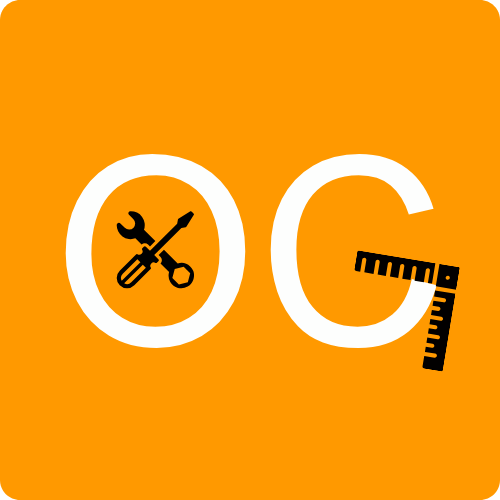

Los servicios de Orange Cat
Estos son los servicios que ofrece Orange Cat:
Boilerplates: Plantillas de código reutilizables Ver más
Orange cat es una marca no registrada que ayuda con la programación y el desarrollo full-stack. Orange Cat contiene diversos servicios para ayudarte en lo que podamos.
Estos son los servicios que ofrece Orange Cat:
Boilerplates: Plantillas de código reutilizables Ver más
Orange Cat dispone de un lenguaje muy fácil de programar para cualquier persona sea principiante o desarrollador avanzado
Estas son las características que lo hacen tan simple:
Sintaxis de python: Tiene la sintaxis simple de python
Tipado estático: Tiene tipado estático para evitar falta de entendimiento en variables
Tipos de datos simples: Tiene estos tipos de datos tan simples: